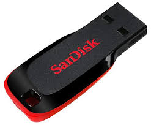

Älykäs muistitikku, joka suojaa kaiken tärkeän
CyberKey Pro on uuden sukupolven kyberturvallinen muistitikku, joka yhdistää sotilastason salauksen, älykkään käyttöoikeudenhallinnan ja fyysisen manipulointisuojan. Se on suunniteltu käyttäjille, jotka haluavat varmistaa, että heidän tietonsa pysyvät turvassa – missä tahansa.
Laitteen sisäinen turvapiiri valvoo käyttöä reaaliajassa ja lukitsee laitteen automaattisesti epäilyttävien yritysten jälkeen. CyberKey Pro on nopea, kestävä ja luotettava ratkaisu kaikille, jotka eivät tingi tietoturvasta.

kuva CyberKey Pro -muistitikusta